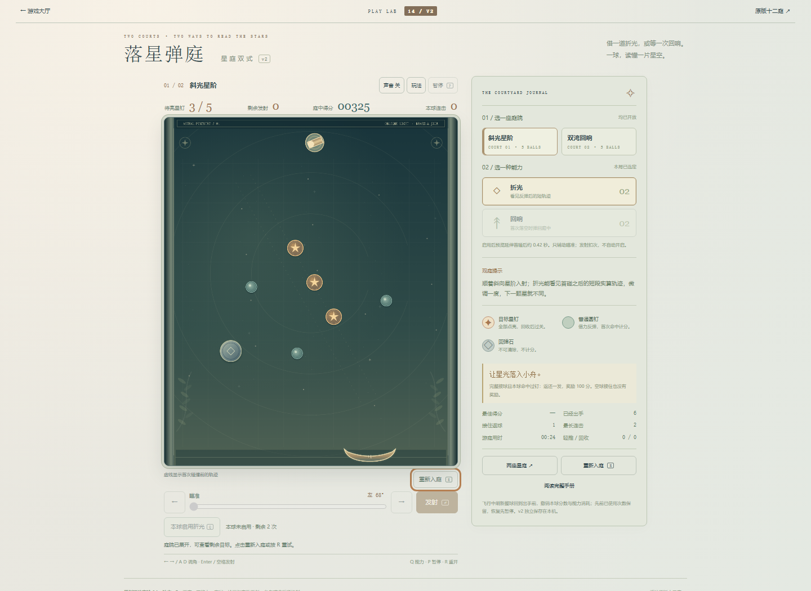
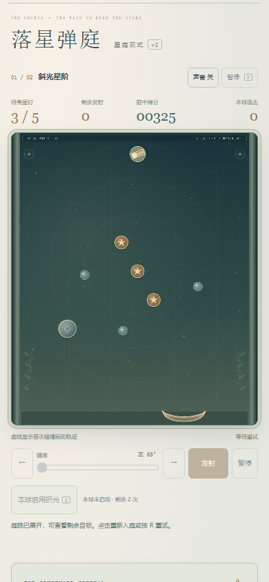
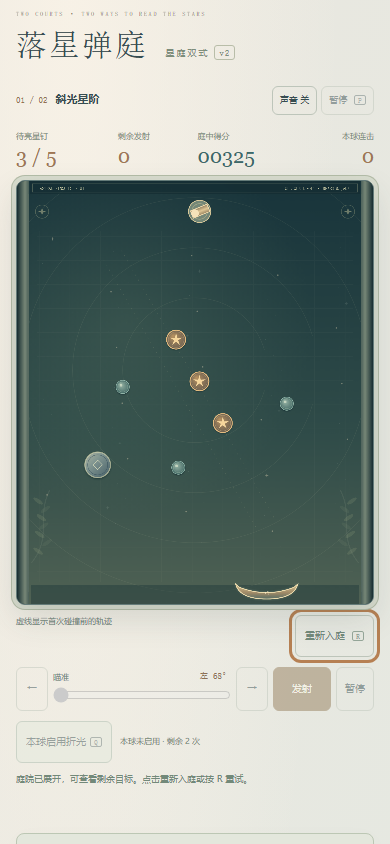

原先390CSS关闭失利卡后，焦点在约1575px的侧栏按钮，超过844高视口。现在场地下方提供“重新入庭 R”，只在查看失利庭院时出现；焦点留在就近操作，场地仍完整可见。
按Enter或R才回本庭准备态，不自动开始；准备按钮使用nearest滚动与12CSS边距露出焦点环。引擎、难度、球数和存档不改。基线38c3fd2485d57676991e4ac286d2304d70b1b5d0。



每个尺寸连续自然失败两次：第一轮鼠标关闭/Enter重试，第二轮Tab空格关闭/R重试。四次最终本地查看均保持整个场地可见、操作与焦点在视口内，查看不改游戏或存储；准备态不自动开局，暂停刷新正常。7组控制器fixture另列，胜利和第二庭分支不是本批自然通关证据。
完整结果与未验边界 · 基线普通UI · 最终普通UI · 控制器结果 · 测试源码 · 普通输入脚本 · 首候选未通过记录 · 迭代说明 · 此前排查与候选来源
前图为上一批鼠标关闭实图，后图为本批键盘关闭实图，非同一像素帧；图片未经AI生成、裁切或重绘。手机尺寸为桌面模拟，真机、屏幕阅读器、声音、手感及审美未验。